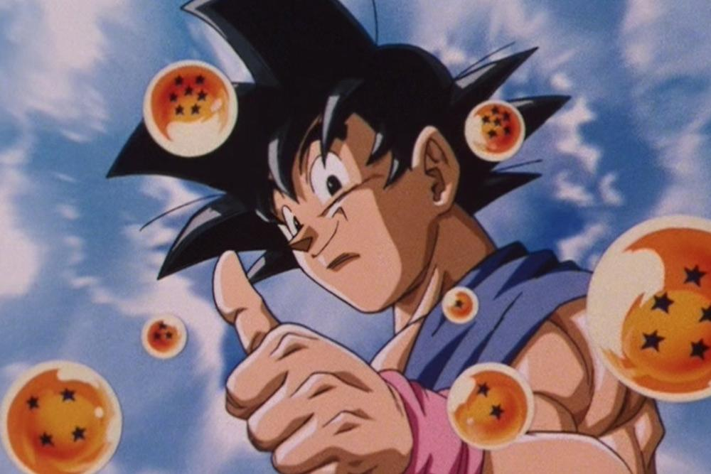
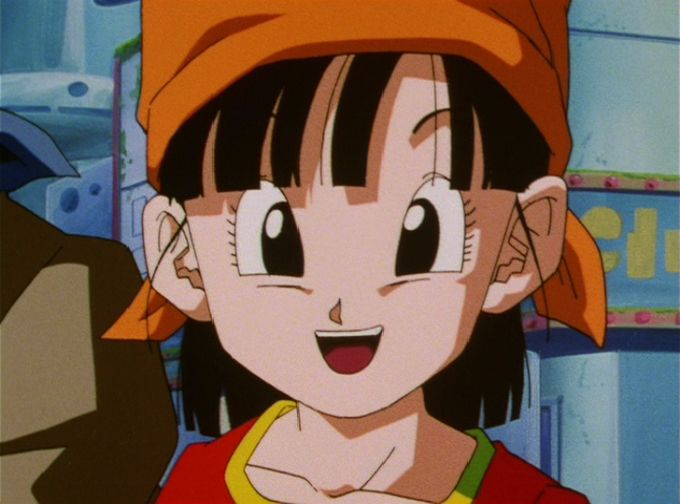
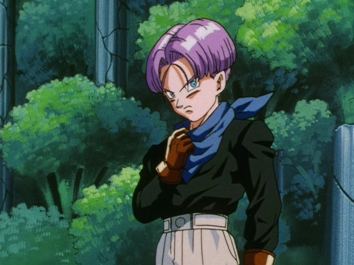

Año de estreno: 1996.
País de origen: Japón.
Género: Aventura, ciencia ficción.
Nombre de los creadores: Toei animation.
10 años después del final de Dragon Ball Z, Goku vuelve para una nueva aventura, ahora para buscar las esferas del dragon por todo el universo junto a su nieta Pan y el hijo de su amiga, Trunks, trayendo así la conclusión de esta serie.
| Son Goku |  | Goku siempre fue el personaje principal de la saga Dragon Ball. Todas las aventuras y sucesos importantes dentro de la serie suceden por él y la parte final de Dragon Ball GT es prueba de ello. |
|---|---|---|
| Son Pan |  | La nieta del heroe Goku, ella es la menor del grupo de protagonistas y suele cometer muchos errores escudandose en una fachada de persona fuerte. |
| Trunks Brief |  | El hijo de Bulma Brief. Trunks es obligado a iniciar el viaje por el universo por su padre Vegeta, sirviendo como alivio comico. |